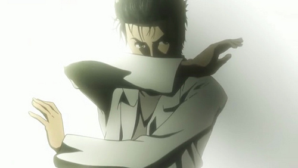

Okabe Rintaro is the main character of the popular anime/visual novel "Stens;Gate". He occasionally refers to himself as the mad scientist "Hououin Kyouma", nobody understands why.
-"If you want to grant your own wish, then you should clear your own path to it."Has lived in:
- Tokyo, Japan